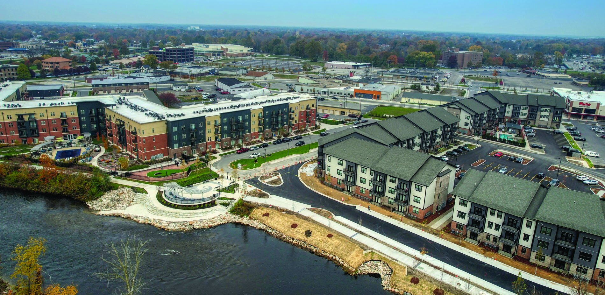

Regional HNA
Regional HNA
 Regional HNA
Regional HNA
This dashboard was created by CommunityScale as a public platform to access and engage with the Regional Housing Study, led by a partnership of regional planning collaborators including the Michiana Area Council of Governments (MACOG), South Bend Elkhart Regional Partnership (SBERP), and the Community Foundations of Elkhart, Marshall, and St. Joseph Counties. This page summarizes the Housing Needs Assessment (HNA) for the region as prepared to support the overall Regional Housing Study
This study is funded by Lilly Endowment Inc through a Giving Funds for Tomorrow (GIFT) VIII grant which is being administered by MACOG with support from the South Bend Elkhart Regional Partnership (SBERP).
A foundational component the Regional Housing Plan, this Housing Needs Assessment is the result of extensive quantitative data analysis and stakeholder engagement to understand housing needs and opportunties at the regional scale.
This Housing Needs Assessment document is also availble in a more detailed, downloadable pdf format: [fix link]


The Housing Needs Assessment measures housing demand as derived from these sources:
| Demand driver | Total demand (units) |
|---|---|
| Attainability gaps | 34,080 - 42,590 |
| Organic growth | 8,010 - 10,020 |
| Essential workforce | 7,220 - 9,020 |
| Potential downsizers | 10,410 - 13,010 |
| Total | 59,710 - 74,640 |

Most of the region’s housing demand is driven by low-income households, especially those unable to find affordable housing under current circumstances. There is also significant demand at the higher end of the income spectrum. About one third of demand is driven by households earning between 60-120% AMI.
| Income (AMI) | Total demand (units) |
|---|---|
| <30% | 20,000 - 24,990 |
| 30-60% | 15,590 - 19,490 |
| 60-80% | 3,550 - 4,440 |
| 80-100% | 7,080 - 8,850 |
| 100-120% | 3,880 - 4,860 |
| >120% | 9,610 - 12,010 |
| Total | 59,710 - 74,640 |

Regardless of overall need or demand, only a limited number of units can realistically be built each year. The housing production target summarized at right combines the demand analysis with estimates of the practical limits of applicable subsidy programs (i.e. how many units each program typically supports each year) and development industry capacity (i.e. how many units developers have collectively proven able to produce each year) for quantities that are ambitious but also achievable.
In spite of these practical constraints, accelerated housing production is possible with strong leadership, political will, increased resources, and community support. This production target should be considered a goal that is meant to be exceeded.
| Income (AMI) | Production target (units) |
|---|---|
| <30% | 480 - 600 |
| 30-60% | 1,070 - 1,340 |
| 60-80% | 600 - 750 |
| 80-100% | 600 - 750 |
| 100-120% | 3,090 - 3,860 |
| >120% | 7,600 - 9,500 |
| Total | 13,440 - 16,800 |

The table below translates the housing production target into units by overall monthly cost and approximate purchase price and lease rent these costs correspond with.
Monthly costs represent the maximum range households at each income level can spend on housing without becoming cost burdened (i.e. spending over 30% of their income on housing). These costs include both mortgage/rent as well as utilities, taxes, insurance and other fundamental housing expenses.
The affordable purchase price and lease rent represent the buying power each monthly cost level represents.
| Income (AMI) | Production target (units) | Affordable monthly cost | Affordable purchase price | Affordable lease rent (per month) |
|---|---|---|---|---|
| <30% | 480 - 600 | $520 - $640 | $43,340 - $52,970 | $410 - $510 |
| 30-60% | 1,070 - 1,340 | $1,040 - $1,280 | $103,490 - $126,490 | $920 - $1,120 |
| 60-80% | 600 - 750 | $1,400 - $1,710 | $143,600 - $175,520 | $1,250 - $1,530 |
| 80-100% | 600 - 750 | $1,750 - $2,130 | $183,710 - $224,530 | $1,590 - $1,950 |
| 100-120% | 3,090 - 3,860 | $2,100 - $2,560 | $223,700 - $273,420 | $1,930 - $2,350 |
| Total | 13,440 - 16,800 |
Two major employers recently announced plans to open facilities in the Indiana Enterprise Center in northwest St. Joseph County which are projected to create up to 2,700 jobs: Amazon data center (1,000 jobs); GM EV battery plan (1,700 jobs)
At a rate of 0.7 households per job (the prevailing jobs-to-households ratio), these two employers could add nearly 1,900 new households to the region, likely mostly concentrated in St. Joseph County but with some impact in Marshall and Elkhart Counties as well. However, it is also possible an outsized portion of these jobs will be filled by existing residents either shifting from other, less desirable jobs or re-entering the workforce after temporary disengagement.

Employment and wages are a direct determinant of a household’s ability to pay for housing. The table at right summarizes median wages (annual and hourly) for typical occupations in the region. These earnings are translated into AMI as well as the amount this income can afford in rent or to purchase a home without cost burden.
Given these are median wages, it should be assumed there are subsets of people earning more and less than these figures.
52% of households in the region include multiple earners such that their household income reflects combinations of these wages. For example, a household with a median-wage manager and a median-wage firefighter would earn 126% AMI.

Low Income Housing Tax Credits (LIHTC) represent one of the most prevalent and effective tools with which to deliver housing affordable to households earning 60% AMI and below. In many communities across the country, there are very few financing alternatives outside this program to provide this level of affordability.
The LIHTC supply is limited and its allocation is competitive on a state-by-state basis. The graph at right tracks LIHTC-funded units over the past 15 years and projects likely supply through 2040. The region’s ability to deliver new housing at 60% AMI and below will be largely dependent on how well local developers and their partner municipalities and stakeholders can compete for an outsized share of Indiana’s LIHTC allocation.

As the region’s growth extends into Michigan, there are concerns about losing population and investment out of state.
Migration trends over the past several years suggest a small degree of net out-migration from St. Joseph and Elkhart Counties to Michigan, an average of 65 households per year. However, the flows are not evenly distributed between Michigan counties. While the region nets an average annual loss of about 125 households to Cass County, MI, the region nets an average annual gain of about 60 households from Barrien County, MI.
Overall, net out-migration to Michigan does not seem to be a significant problem for the region at present but monitoring these trends is worthwhile in case this changes in the future.

Especially since the pandemic’s onset, several fundamental development costs have increased substantially, making it more difficult to finance and build housing within price ranges that most can afford. For example, interest rates drive up the cost of construction and permanent loans that typically underwrite the bulk of a development’s budget. Construction materials and labor costs have also risen sharply, adding costs to development projects that can only be passed on to tenants and buyers to a point before becoming too expensive to compete in the market.
While most community’s central plants have sufficient capacity to support growth, local sewer and water distribution is often limited to areas that have already been largely built out and extending to new redevelopment districts can be very costly. Though all sides acknowledge sewer and water connections are central to unlocking new development opportunities, there is not always agreement about who can or should fund and implement the needed system extensions. Municipalities and utilities may lack the capital on hand and developers may not be able to justify the expense without compromising a project’s financial feasibility.
Many developers have reported a lack of construction labor that impedes their ability to meet production goals and keep up with the opportunities in front of them. This includes both licensed and unlicensed trades. For the tradespeople that are available, their costs may be elevated and scheduling difficult given the high demand for their time and skills.
From an analytical perspective, all communities in the region are experiencing some degree of housing shortage or under production relative to local need and projected demand. However, local leaders and residents may not be fully informed and/or on the same page regarding the extent of this challenge or the steps necessary to address it. For example, some may be concerned about the impacts of new development, higher density, rental housing, and other changes on the capacity of local services or the character of the local community despite a general desire for more housing. Resistance to change, disagreement about the nature of the problem, and conflict over the steps to address it can slow or prevent solutions from developing or taking effect.
Most of the region’s housing was built years or decades ago under different market conditions than exist today. For example, zoning in many neighborhoods reflects a legacy of large homes suitable for families with children on relatively large lots. However, current trends see households shrinking and preferences shifting toward smaller units near amenities and downtowns. The minimum lot sizes, building square footages, and other massing and density parameters in force by local zoning does not always align with the housing typologies and land use patterns today’s households would prefer - especially smaller units on compact lots that would more likely be affordable to middle class households and seniors.
Vacant, abandoned, and derelict (VAD) properties are a significant driver of blight and devaluation in many neighborhoods, especially (but not exclusively) in the region’s larger cities. Infill development refers to the process of converting VAD and other underutilized properties into new, quality housing, often with affordability protections. Despite the large number of VAD parcels, there are several hurdles to transforming these sites. For example, significant resources are required to inventory, acquire, remediate, and reposition these sites. Developers have trouble financing small, individual projects (especially when opportunities exist elsewhere for larger, more efficient and profitable projects). Financing resources such as trust funds and land banks and are not widespread.
The Michiana Area Council of Governments (MACOG) is a voluntary organization of local governments that studies and attempts to resolve areas of interlocal issues.
CommunityScale is a pioneering urban planning and spatial data analysis company serving clients across the United States. Follow CommunityScale on LinkedIn and Twitter/X. This dashboard is open source MIT license - 2024 CommunityScale